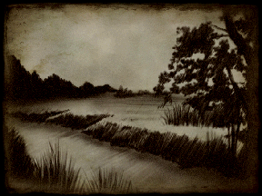
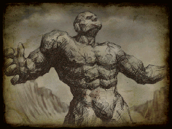

17/07/2001
17/07/2001
-
PROLOG
|  |
Gdy najwiêksza z wojen - wojna bogów - wreszcie siê skoñczy³a,
Ludzie zapanowali na kontynencie Dman.
Tam rozwinê³a siê ich cywilizacja.
Bohaterowie wojny utworzyli w³asne króleswa w krainach
Aesh, Shereg i Yam.
W celu utrzymania pokoju i równowagi si³ na kontynencie,
Ludzie z tych trzech krain, wspólnie zbudowali
Œwiête Biskupstwo w krainie Aesh,
Le¿¹cej w samym sercu Dman.
|  |
Który by³ straszliw¹ broni¹ w wojnie bogów,
Niespodziewanie zosta³ zbudzony i rozpocz¹³ dzie³o zniszczenia.
Nikt nie móg³ go powstrzymaæ,
Nikt te¿ nie wiedzia³, kto z³ama³ pieczêæ na bramie Galgadola.
Ca³y kontynent sp³yn¹ krwi¹...
Terror usta³ dopiero wtedy gdy pojawi³ siê m³ody kleryk, Piach,
Któremu uda³o siê ostatecznie uwiêziæ Galgadola i jego popleczników.
Kontynent zosta³ ocalony, a ludzie obwo³ali Piacha bohaterem.
M³ody kleryk szybko sta³ siê doradc¹ Papie¿a Shan Chkel
I wykonywa³ uczciwie powierzone mu zadania.
Ale pewnego dnia Papie¿ zmar³, a Piach wkrótce potem
Zaj¹³ jego miejsce jako nowy Papie¿
Czasy pokoju nie mog³y jednak trwaæ wiecznie...
Nie tylko zakaza³ studiowania historii bogów
I wszelkich nauk teologicznych, ale z zimn¹ krwi¹
Wymordowa³ wszystkich, którzy mu siê sprzeciwiali.
Tyrania Piacha wzrasta³a z dnia na dzieñ,
A z³o stawa³o siê coraz silniejsze.
Potwory - do tej pory kryj¹ce siê przed ludŸmi - znów zaczê³y
Pojawiaæ siê i zabijaæ niewinnych.
Z czasem ludzie zaczêli podejrzewaæ, ¿e to
Harass - Bóg Zniszczenia narodzi³ siê na nowo i rozpocz¹³ siê
Armagedon
Czas, w którym ca³y kontynent sp³ynie we krwi...